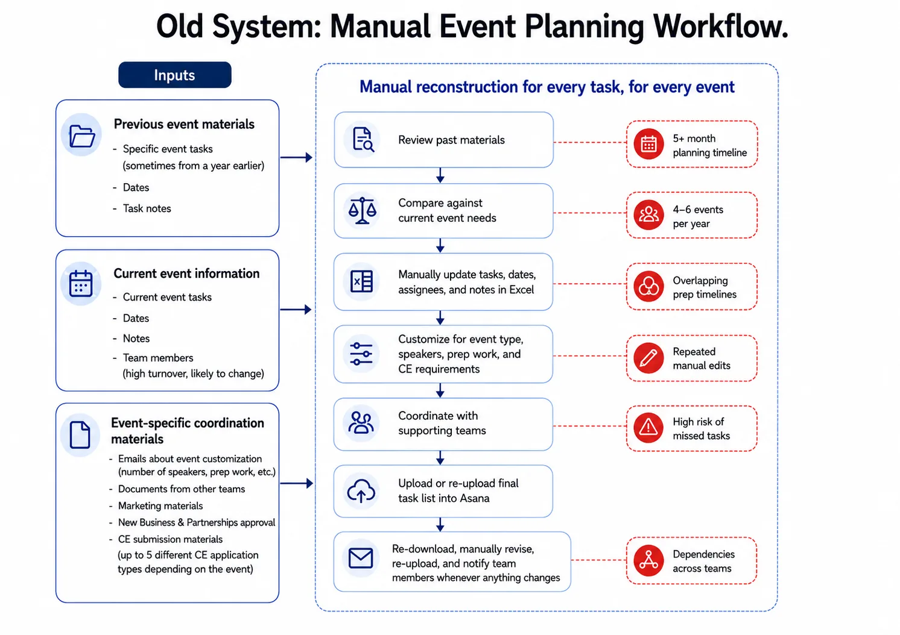

Reducing Project Setup Time Through Workflow Automation
Eliminating setup friction and streamlining internal workflows with a single click.

Overview
As part of a broader redesign of the Adolescent Health Initiative's internal tools and workflows, i redesigned how the Training & Events team created and managed project plans for webinars, single-day and multi-day conferences.
The existing process required staff to manually adapt a generic task list, calculate deadlines, assign ownership, add instructions, and upload the completed plan into Asana for every new initiative.
I replaced it with an automated system that generated complete project plans, individual task lists, and notifications with a single click — reducing setup time from two hours to under two minutes .
Discovery & Workflow Mapping
I spoke with team members involved in planning and delivering training initiatives to understand how projects were created, assigned, updated, and monitored. I also mapped cross-team dependencies, including marketing, partnerships, speaker preparation, and continuing education requirements.
The workflow revealed repeated manual reconstruction: staff adapted a generic checklist, recalculated deadlines, reassessed ownership, and communicated updates individually for every event.
The process took approximately 2 hours per event and created several points of failure. Manual entry increased risk of errors, and any change required tasks and status updates to be revised separately.
The team needed a faster, more reliable way to create initiative-specific project plans while keeping deadlines, responsibilities, and communication aligned.

FINDING 1
Event Dates Drove the Entire Workflow
Most tasks were due a specific number of days before or after an event. Yet staff manually calculated and entered every deadline, creating unnecessary work & increasing risk of errors when dates changed.
Design Response: Anchor the Workflow to the Event Date
- Deadlines should calculate automatically based on how many days before or after each task was due.
- If the event changed, the full timeline should adjust automatically.
FINDING 2
Same Data Needed to Serve Different People
Event leads needed a full project view, individual team members needed personal to-do lists, and supporting teams needed visibility into relevant tasks and handoffs. The data needed to stay connected while adapting to each user's role.
Design Response: Create One Source of Truth with Role-Specific Views
- The same task data should power the full project tracker, individual to-do lists, and cross-team views without requiring duplicate entry.
FINDING 3
Limited Visibility Created Bottlenecks
Team members could not easily see the full event pipeline, understand what had been completed, or identify where work was delayed. This led to frequent status check-ins, slowed handoffs, and made it difficult to plan ahead for other work.
Design Response: Make Status Visible
- The system should surface progress, ownership changes, approaching deadlines, and overdue work automatically so teams can plan ahead and respond before bottlenecks form
Designing the New Workflow
Project Control Table
Each event type was given its own workspace within the broader organizational redesign.
Each event type began with a control table containing only the essential project information. The "Tasks Created?" field acts as a safeguard, preventing users from accidentally generating the same project twice.

Event-Specific Task Template
I created separate templates for each event type, with fields for the task name, relative due date, default assignee, and task instructions.
To establish each relative due date, I analyzed more than five years of historical event timelines to identify when tasks were typically completed in relation to the event date. I reviewed the proposed timelines with event team members to confirm they remained accurate and reflected current training requirements.

Automated Task Generation
With one click, the system generated the complete project plan, calculated every deadline, assigned task owners, and added the tasks to the master task list.
From there, the same task data automatically populated:
- the event-specific project tracker, with time-based views and status filters;
- each team member's personal to-do list;
- cross-team views for shared dependencies.
This reduced project setup went from two hours to under 30 seconds.

Automated Notifications
I used AI-assisted development to build a standardized notification framework that could be reused across the organization. Notifications were triggered when:
- A task deadline was changed
- A task was reassigned, alerting both the previous and new assignee
- A task was due that day
- A task became one day overdue
- A task remained overdue for three days, escalating the alert to the assignee's manager
This replaced manual status check-ins with timely, role-specific communication and gave teams greater visibility into changes, upcoming work, and potential bottlenecks.

Usability Testing
The team was already two weeks into onboarding and had a basic understanding of the new platform. I created a simulated event in a sandbox environment and asked participants to complete the setup independently.
I observed their questions, mouse movements, hesitation, and points of friction, and then held a debrief to understand what felt easier, what remained difficult, and what they would change.
Impact
The redesigned workflow reduced event setup time from 2 hours to under 30 seconds. Beyond setup speed, the new system:
- Reduced manual data entry and repeated work by 95%
- Gave team members real-time visibility into the full event pipeline
- Allowed staff to view the same data in formats that matched how they worked
- Automated deadline, reassignment, and overdue notifications
- Reduced status check-ins and administrative coordination
- Made onboarding new team members easier
- 100% adoption reached within two weeks, with all 2026 events managed through the system
- Created a reusable structure that could be updated once and applied to future events
The result was a more reliable, transparent and scalable workflow that reduced administrative burden and gave the team more time to focus on delivering healthcare training events.
Learnings
- Map before migrating — Redesigning the workflow prevented old friction from carrying into a new tool.
- One source of truth can support many views — Shared data worked best when adapted to each user's role.
- Automate the repetitive, preserve flexibility — Standardization reduced effort without limiting customization.